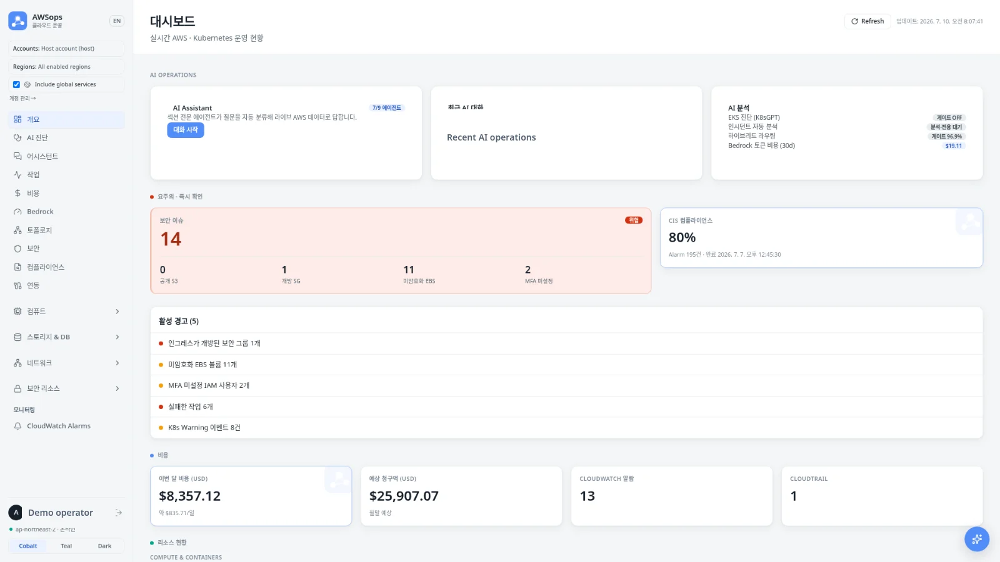
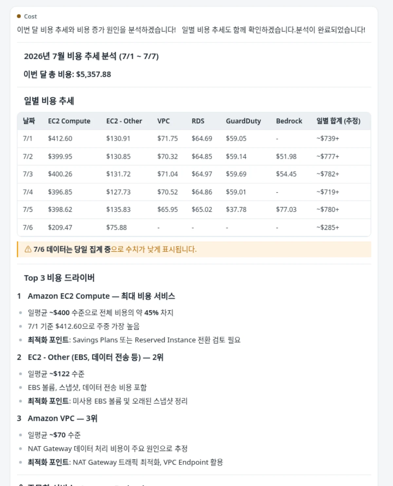
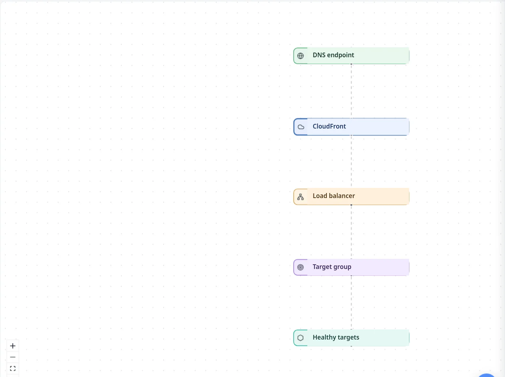
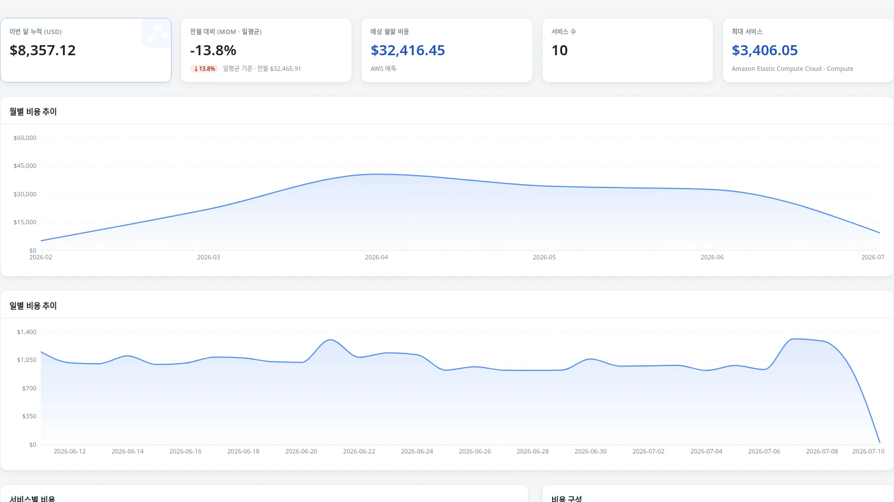
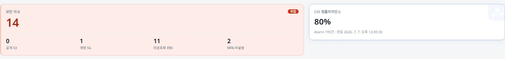
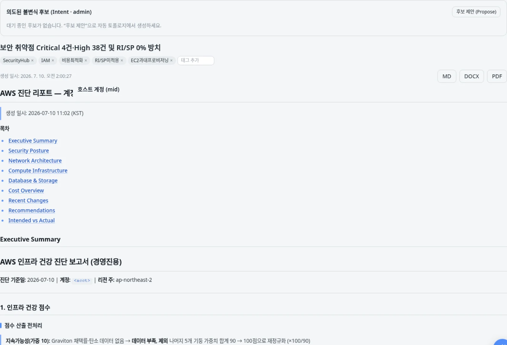
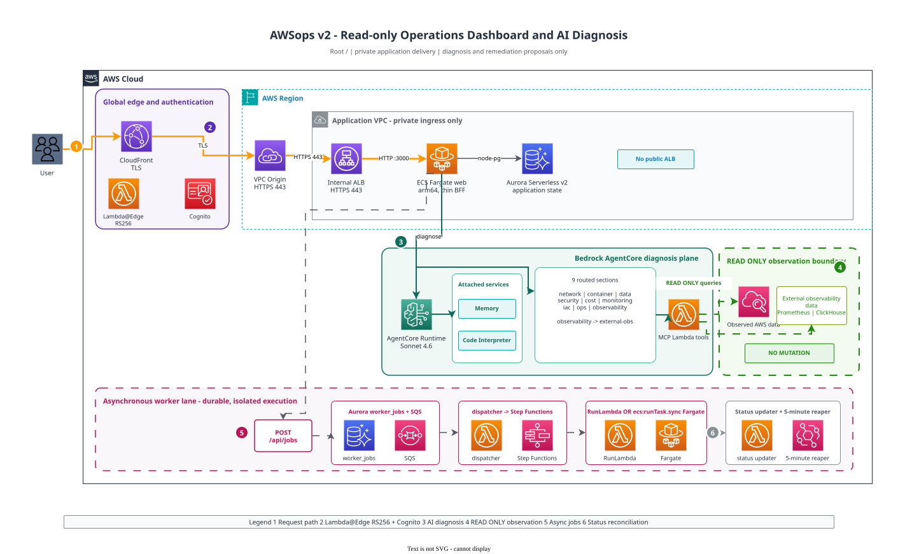

Private edge
CloudFront VPC Origin 뒤의 내부 ALB로 애플리케이션을 보호합니다.

흩어진 AWS 운영을 하나의 화면에.
운영 현황을 보고, 라이브 데이터에 질문하고, Well-Architected 관점의 진단까지 한 흐름으로 이어갑니다.
제품 데모 보기AWS 리소스, Kubernetes, 비용, 보안 신호를 하나의 대시보드에서 비교합니다.

질문 의도를 전문 라우트로 분류하고 라이브 데이터를 조회합니다. 여러 도메인의 결과는 한 번에 읽을 수 있는 답변으로 돌아옵니다.
리소스 흐름을 따라가고, 비용 추이와 보안 통제를 함께 확인합니다.



무거운 진단은 비동기 워커에서 처리하고, Well-Architected 관점의 결과를 MD, DOCX, PDF로 내보냅니다.

비공개 엣지, thin BFF, Aurora, AgentCore 전문 라우팅, 비동기 워커가 역할별로 분리됩니다.

모바일에서는 다이어그램을 세로 방향으로 표시합니다.
AWSops는 운영 상태를 관찰하고 진단과 개선 제안을 제공합니다. 진단 결과로 고객 AWS 리소스를 자동 변경하거나 자율 복구하지 않습니다.
CloudFront VPC Origin 뒤의 내부 ALB로 애플리케이션을 보호합니다.
Cognito와 Lambda@Edge의 RS256 검증으로 접근을 통제합니다.
라이브 조회는 AgentCore MCP 도구 경계 안에서 읽기 전용으로 수행합니다.
Aurora와 관리형 시크릿으로 상태와 자격 증명을 분리합니다.